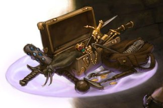

- 1 уровень, вызов (ритуал)
- Время накладывания: 1 действие
- Дистанция: 30 футов
- Компоненты: В, С, М (капля ртути)
- Длительность: 1 час
- Классы: волшебник
Это заклинание создает круглый горизонтальный диск из силового поля диаметром 3 фута и толщиной 1 дюйм (2,5 см), парящий в 3 футах над полом в свободном пространстве на ваш выбор, видимом в пределах дистанции. Диск существует, пока заклинание активно, и может вынести на себе 500 фунтов. Если на него поместить больший вес, заклинание окончится, и все, что было на диске, падает на пол.
Диск неподвижен, пока вы находитесь в пределах 20 футов от него. Если вы переместитесь от него на расстояние, превышающее 20 футов, диск следует за вами, оставаясь в пределах 20 футов. Он может перелетать по неровной поверхности, перемещаться по лестницам, склонам и подобным препятствиям, но не может пересекать перепады по высоте в 10 футов и более. Например, диск не сможет перелететь над 10-футовой ямой, и не сможет из неё выбраться, если будет создан на её дне.
Если вы переместитесь более чем на 100 футов от диска (например, если он из-за препятствия не сможет последовать за вами), заклинание оканчивается.
Тензеров парящий диск — Заклинания
Тензеров парящий диск [Tenser’s floating disk]PH14 PH24
Галерея

Комментарии
2. Могут ли другие персонажи перемещать этот диск толкая его?
2.1. Отсюда возникает дополнительный вопрос: могу ли я создать этот диск в открытом широком дверном проёме чтобы предотвратить закрывание дверей пока я рядом?
2. Нет, диск неподвижен
3. Да, но как только сила закрытия дверей превысит 500 фунтов он исчезнет.
Смеялся в голос, читая ваш комментарий! Но всё же ваши идеи не бесполезны, в конце концов, в космос тоже не с первого раза полетели!
Если подшаманить с средствами управления, то это будет первый летательный аппарат в днд, созданный игроками (хотя наверняка подобное уже сделали, просто не рассказывали об этом в инете) летательный аппарат на магической тяге! С изобретателем в команде из этого заклинания можно сделать хоть Венеру-1, хоть баллистическую ракету класса земля-дракон с наполнением в виде тонны взрывчатых веществ и артефакта. Хотя с последим нужно будет придумать как защитить волшебника создавшего эти диски, что тоже задача не из простых
1. Его нельзя использовать как летательное средство потому что нет такого рычага, который сможет быть противовесом волшебнику на удочке длинной 20 футов.
2. его нельзя использовать как способ переноски, так как волшебники НЕ ХОДЯТ впереди отряда, а прячутся за спинами своих товарищей, из-за чего чтобы не было на этом диске оно упадёт и никто не заметит.
3. Диск потеряет всё, что на нём было лишь из-за поворота в подземелье и вы всё так же этого не заметите. Диск останется в комнате, а вы пройдёте уже всё подземелье и обойдёте эту комнату уже с другой стороны.
4. Его нельзя использовать как способ пройти что-то (болото, колья в яме, хлипкий или скрипучий пол, скользкую лестницу), для чего он скорее всего и предполагался. Ведь тогда волшебник должен быть ВПЕРЕДИ, нести на этом диске сопартийца и САМОМУ каким-то образом лететь! А если волшебник УЖЕ умеет летать, то ему и нахрен уже не нужен будет этот диск.
Так что если вы хотите, что бы этот диск использовали, то снимите это тупое ограничение, что он неподвижен, на то, что вы можете управлять его положением в пределах 10-ти футов и он движется со скоростью не больше вашей, вот тогда это заклинание будут брать и использовать и вы увидите волшебников-скейтбордистов. В качестве ограничения такой имбовости (не побоюсь такого слова) можете поставить ограничение на свой выбор: невозможно накладывать ритуалом/ требует концентрации/ длиться 10 минут/ материальный компонент (одна платиновая монета)
В условии заклинания написано "парящий над полом на высоте 3 фута" И "Он может перелетать по неровной поверхности, перемещаться по лестницам, склонам и подобным препятствиям", что дает нам понять, что он может изменять высоту.
Прикол заключается в том, что не ясно, что можно считать полом в случае заклинания. Если под пол подходит любая устойчивая поверхность, то можно поставить палет под этот диск, лечь на него, и подтянуть его руками. Тогда диск начнет подниматься над полом(палетом), при этом поднимая персонажа, держащего палет, что поднимает и его. И так по циклу.
По итогу, мы медленно но верно левитируем
Ранее в описании сказано, что диск парит в 3 футах над землёй, и это никак не противоречит слову "неподвижен", потому как расстояние до земли может меняться. Так что при появлении под ним ямы диск просто опустится, пока не станет снова парить в 3 футах над землёй.
Будь он недвижим, как Недвижимый предмет (Immovable Object), тогда бы ещё ладно, потому что там напрямую написано, как ведёт себя недвижимый объект. А неподвижный - это другое. Когда в ДнД про объект чего-то не сказано, то объект ведёт себя так же, как любой другой.
Вы можете создать несколько дисков, но про реку лавы не уверен, т.к. он парит над землей, а не над жидкостями или магмой.
Диск не будет двигаться за книгой, поскольку заклинание накладывает не она, а вы, хоть и так, будто бы стояли на её позиции. Хотя я бы лично разрешил такое:)